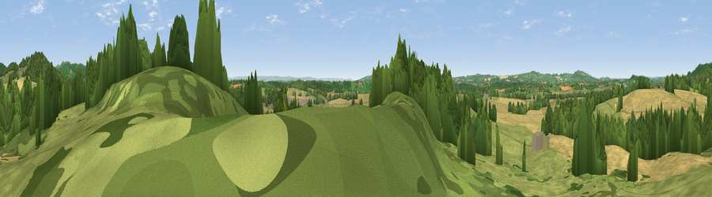

Viewpoint near Donnington
#12901 in England · top 35% of its area beats it · near DonningtonThe view, rendered

A 360° render of this exact spot computed from the terrain model, tree cover and land cover — summer colours, afternoon light, calibrated against photographs of famous viewpoints. Real trees, hedges and buildings will differ in detail.
The panorama
Grey silhouette: terrain skyline in each direction (720 bearings, Earth curvature and refraction included). Dashed green: skyline with trees (+15 m) and buildings (+8 m) as obstacles. Blue strip: how far the ground is visible on each bearing.
Where the view opens
Wedge length = distance to the farthest visible ground on that bearing (vegetation-aware). Rings at 10, 25 and 50 km.
What fills the view
35% grassland · 33% woodland · 31% cropland ·
Angular shares of the visible panorama (visual magnitude), not map area. Landscape diversity 0.49 (0–1 Shannon).
Key numbers
More beautiful places nearby
The staircase of upgrades: each row has a higher view potential than everything closer. Driving times are estimates from straight-line distance, calibrated against real road routing — check an actual route before setting out.
| Place | Direction | Drive | Score |
|---|---|---|---|
| Viewpoint near Eastnor | NNE · 2 km | ~6 min | 75.3 |
| Chase End Hill | ENE · 4 km | ~10 min | 81.5 |
| Ragged Stone Hill | NE · 5 km | ~10 min | 82.5 |
| Midsummer Hill | NE · 5 km | ~11 min | 83.0 |
| Millennium Hill | NNE · 7 km | ~14 min | 86.9 |
| Worcestershire Beacon | NNE · 12 km | ~23 min | 87.1 |
| Viewpoint near West Quantoxhead | SSW · 109 km | ~134 min | 87.9 |
| Viewpoint near West Quantoxhead | SSW · 110 km | ~134 min | 88.7 |
52.00306, -2.40674 · source: screening · position refined by local search. Computed location — check access rights before visiting.